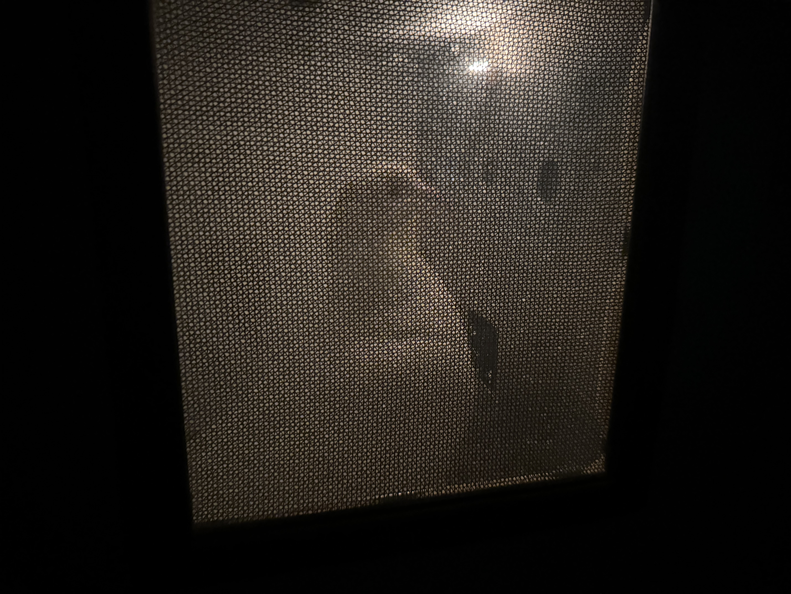

Learn how pigeons learn
I joined the comparative psychology lab as a research assistant in fall 2026. I help run match-to-sample experiments with four pigeons.
One ongoing experiment uses a matching-to-sample task with four types of trials in each session: shape, color, shape (divided attention), and color (divided attention). On a divided-attention trial, the center key might first display a green triangle. If shape is tested, the side keys then display a triangle and a different shape, with the triangle being the correct match. If color is tested, the side keys display green and a different color, with green being the correct match. We vary the proportion of color and shape divided-attention trials within a session to study whether testing one feature more often biases matching performance toward that feature.
